Chapter 3: Flash Memory & SSDs¶
Flash memory is inside every phone, laptop, camera and data centre. This chapter goes from a single charge-trapping cell to complete SSDs: pages and blocks, bits per cell, the 3D NAND layer race, NOR flash, the controller and flash translation layer, endurance and retention, and power-loss protection. It then covers phone and card storage, SSD form factors and PCIe generations, ZNS and Flexible Data Placement, the giant QLC drives built for AI, and the companies that make flash in 2026.
3.1 How a Flash Cell Stores Charge: Floating Gate vs Charge Trap¶
Flash memory stores bits by trapping electrons in a tiny insulated region inside a transistor. The trapped electrons change the voltage needed to switch that transistor on (its 'threshold voltage'), and the chip reads that voltage to decide whether the cell holds a 1 or a 0. Because the electrons stay trapped without power, flash is non-volatile.
Floating gate vs charge trap
| Floating gate | Charge trap | |
|---|---|---|
| Storage layer | Conductive polysilicon | Insulating silicon nitride |
| How charge sits | Spreads across the gate | Stays where it was trapped |
| One oxide defect | Can drain the whole cell | Loses only nearby charge |
| Neighbour coupling | Higher | Lower |
| Fit for 3D stacks | Harder | Wraps around vertical channels |
| 3D NAND users | Solidigm (ex-Intel) | Samsung, SK hynix, Kioxia, Micron, YMTC |
Charge-trap cells keep electrons in isolated traps, so one defect cannot drain the whole cell.
Think of it like…
A flash cell is like a sealed jar whose lid only opens under very high pressure: you force marbles (electrons) in, they stay put when the pressure is off, and you can tell how full the jar is by how hard a lever beside it is to push.
Real-world example
Priya, an intern at fictional Lumen Devices, tests a single cell. Erased, it switches on at a low gate voltage and reads as 1. After a programming pulse of roughly 20 V pushes electrons into its storage layer, its threshold voltage rises, it stays off at the read voltage, and the chip reads it as 0. A day later, unpowered, it still reads 0.
How it works¶
- A flash cell is a transistor with an extra charge-storage layer between its control gate and its channel, wrapped in insulating oxide.
- Program: a high voltage (roughly 15-20 V) on the control gate pulls electrons through a thin tunnel oxide into the storage layer by quantum tunnelling.
- The trapped negative charge raises the cell's threshold voltage, so it needs a higher gate voltage before current flows.
- Read: the chip applies a reference voltage and senses whether current flows — flowing means erased (1), not flowing means programmed (0).
- Erase: a high voltage on the substrate pulls the electrons back out — and in NAND this always happens to a whole block at once.
Who uses it
NAND design engineers, SSD firmware and reliability engineers, failure-analysis labs and semiconductor students work with flash cell physics every day.
Key takeaway
Memorise the chain: programming adds electrons and raises threshold voltage; erasing removes them, works only on whole blocks, and slowly damages the tunnel oxide — the root cause of flash wear.
Going deeper
- Floating-gate cells store charge on an isolated polysilicon island; a single weak spot in the tunnel oxide can leak all of it, which limited how thin that oxide (roughly 8-10 nm) could be made.
- Charge-trap cells store electrons in discrete traps inside a silicon nitride film; charge stays local, so a defect loses only a little, and the thin film wraps neatly around the vertical channels of 3D NAND.
- Samsung's 2013 V-NAND, the first mass-produced 3D NAND, used charge trap; Micron moved from floating gate to a charge-trap 'replacement gate' design with its 176-layer generation in 2020, while Solidigm kept floating gate.
- Each program/erase cycle forces electrons through the tunnel oxide, creating traps and damage that shift threshold voltages; eventually levels can no longer be told apart reliably, which is why flash has a finite P/E cycle rating.
- NAND programs using incremental step pulse programming (ISPP): a series of short, slightly rising voltage pulses, each followed by a verify read, until every cell lands inside its target voltage window.
- Trapped electrons slowly leak away, faster when hot and when the oxide is worn; this charge loss is the main reason an unpowered SSD eventually loses data, and why retention is always quoted at a temperature.
Common mistakes & misconceptions
- Thinking flash stores bits as tiny magnets or capacitors: it stores trapped electrons that shift a transistor's threshold voltage.
- Assuming one cell can be overwritten in place: NAND must erase a whole block before any of its cells can be programmed again.
- Believing 'non-volatile' means 'permanent': trapped charge leaks, so an unpowered drive stored for years in a hot place can lose data.
Try it: Toy model: reading an SLC cell by comparing its threshold voltage¶
# An erased cell conducts at the read voltage (1); a programmed one does not (0)
def read_slc(vth, vref=0.0):
return 1 if vth < vref else 0
for vth in (-2.1, -0.4, 1.8, 3.2):
print(f"Vth={vth:+.1f} V -> bit {read_slc(vth)}")
Key memory types, devices, interfaces, standards & tools¶
| Name | What it does | Example |
|---|---|---|
| Floating-gate cell Original flash design (Toshiba, 1980s); Solidigm 3D NAND · Technology · Current · Intermediate |
Flash cell storing electrons on a conductive polysilicon gate surrounded by oxide; used in planar NAND and Solidigm's 3D NAND. | Solidigm's 192-layer QLC NAND, used in its D5-P5336 data-centre SSDs, still relies on floating-gate cells inherited from Intel's designs. |
| Charge-trap flash (CTF) Samsung, SK hynix, Kioxia, Micron, YMTC · Technology · Current · Intermediate |
Cell storing electrons in traps inside an insulating silicon nitride layer; resists leakage and scales well in 3D stacks. | Samsung's V-NAND and SK hynix's '4D NAND' both use charge-trap cells wrapped around vertical channel holes. |
| Threshold voltage (Vth) Basic transistor physics · Concept · Current · Beginner |
The gate voltage at which a cell transistor starts to conduct; trapped electrons raise it, and its level encodes the stored bits. | A TLC controller tells eight Vth windows apart using seven read reference voltages to recover three bits from each cell. |
| Tunnel oxide Layer in every flash cell · Component · Current · Intermediate |
Very thin insulating layer that electrons cross during program and erase; its gradual damage limits both endurance and retention. | After thousands of P/E cycles, damaged tunnel oxide in a worn cell leaks charge faster, so data fades sooner when the drive is unpowered. |
| Fowler-Nordheim tunnelling Quantum tunnelling effect (Fowler and Nordheim, 1928) · Concept · Current · Advanced |
Quantum effect letting electrons pass through a thin insulator under a strong electric field; NAND uses it to program and erase. | A program pulse of around 20 V creates a field strong enough for electrons to tunnel from the channel into the storage layer. |
| Program operation NAND flash basic operation · Concept · Current · Beginner |
Adding electrons to the cells of a page with high-voltage pulses until each cell reaches its target threshold voltage. | Programming one TLC page takes hundreds of microseconds because the die pulses and verifies the cells repeatedly. |
| Erase operation NAND flash basic operation · Concept · Current · Beginner |
Removing electrons from every cell in a block at once using a high substrate voltage; slow, and the main wear mechanism. | Erasing a block takes milliseconds, so SSDs erase blocks in the background rather than while you are saving a file. |
| Incremental step pulse programming (ISPP) Standard NAND programming algorithm · Concept · Current · Advanced |
Programming method applying gradually rising voltage pulses, with verify reads in between, to place threshold voltages precisely. | QLC needs tighter voltage windows than TLC, so it uses finer ISPP steps and more verifies, making QLC writes slower. |
| SONOS / TANOS gate stacks Charge-trap cell stack variants · Technology · Current · Advanced |
Layer recipes for charge-trap cells: silicon-oxide-nitride-oxide-silicon, or tantalum nitride with a high-k aluminium oxide blocking layer. | Process engineers compare stack recipes when tuning how quickly cells erase and how well they hold charge at high temperature. |
| Charge loss Flash reliability physics · Concept · Current · Intermediate |
Gradual leakage of trapped electrons over time, accelerated by heat and wear, shifting threshold voltages until reads fail. | Ravi's unpowered camera SSD, left in a hot car all summer, needs many more ECC corrections when he reads it again. |
| Read disturb Flash reliability physics · Concept · Current · Intermediate |
Reading one page applies small pass voltages to other pages in its block, slowly nudging their stored charge after many reads. | A database index page read millions of times can disturb its block, so the controller relocates that block before errors grow. |
| Cell-to-cell interference Flash scaling limit · Concept · Current · Advanced |
Charge in one cell shifts its neighbours' apparent threshold voltage; it worsened as planar cells shrank, pushing the industry to 3D. | Planar NAND near 15 nm suffered so much neighbour coupling that makers moved to larger cells stacked vertically instead. |
3.2 Inside a NAND Chip: Pages, Blocks, Planes, Dies and Packages¶
A NAND chip groups its cells into pages (the smallest unit that can be read or written, typically 16 KB), pages into blocks (the smallest unit that can be erased), blocks into planes and planes into dies. Several dies are stacked in one package. The rule 'write by page, erase by block' shapes everything an SSD does.
Think of it like…
A NAND die is like a notebook written in pen: you can fill any empty line (page), but to correct anything you must tear out a whole chapter (block) — and the notebook has several sections (planes) you can write in at the same time.
Real-world example
Tom's 1 TB SSD uses eight 1-terabit dies, each with four planes and 16 KB pages. One die alone writes only a fraction of the drive's speed, but programming four pages at once per die, across eight dies in parallel, lets the drive sustain several gigabytes per second.
How it works¶
- Cells sharing a word line form pages — commonly 16 KB of data plus spare bytes; a TLC word line holds three logical pages.
- Hundreds to thousands of pages form a block, the erase unit, which in large 3D NAND is often tens of megabytes.
- Blocks are split into planes (typically four to six per die) that can work in parallel.
- A die holds about 1-2 terabits in 2026; packages stack up to 16 or 32 dies.
- The controller reaches dies through channels (often 4-8 in client drives, 16 in enterprise drives) and interleaves work across them.
- Golden rule: read and program by page, erase by block, never overwrite in place.
Who uses it
SSD firmware developers, controller architects, embedded engineers using raw NAND, and test and validation engineers.
Key takeaway
Interview favourite — 'Why can't an SSD overwrite in place?' Because NAND programs by page but erases only whole blocks, so new data goes elsewhere and old pages are marked invalid.
Going deeper
- Each page carries a spare (out-of-band) area, often around a tenth of its size, holding ECC parity and FTL metadata such as which logical address was written there.
- Multi-plane commands program or read one page in each plane simultaneously; SK hynix's 321-layer QLC raised planes per die from four to six to recover parallelism lost with bigger dies.
- ONFI and JEDEC Toggle define the die's bus; per-pin speeds have climbed past 3 GT/s, and Samsung quoted up to 5.6 GT/s for its 400-plus-layer V10 NAND.
- Pages inside a block must be programmed in order from the first; random page programming is forbidden, which is why FTLs append new data sequentially into open blocks.
- Dies ship with a few factory-marked bad blocks and more fail during life; controllers keep a bad-block table and remap to spare blocks, so small numbers of bad blocks are normal.
- Bigger 2 Tb dies mean fewer dies per terabyte and less parallelism, which is why small-capacity drives built from big dies are often slower than larger models of the same line.
Common mistakes & misconceptions
- Assuming a 4 KB write touches only 4 KB of flash: the drive programs whole pages and later erases whole blocks, so internal work can be much larger.
- Expecting a 512 GB SSD to match the 2 TB model of the same line: fewer dies means less parallelism and lower write speed.
- Confusing the operating system's 512-byte or 4 KB logical sector with the NAND page size; the flash translation layer hides the mismatch.
Try it: See sector sizes and discard (TRIM) granularity of your drives (Linux)¶
lsblk -o NAME,MODEL,ROTA,PHY-SEC,LOG-SEC,DISC-GRAN,DISC-MAX
# ROTA=0 means non-rotational (flash); DISC-GRAN is the smallest TRIM unit
Key memory types, devices, interfaces, standards & tools¶
| Name | What it does | Example |
|---|---|---|
| Page NAND flash organisation · Concept · Current · Beginner |
Smallest unit NAND can read or program, typically 16 KB plus spare bytes; it is programmed once between erases. | When Zoe saves a 4 KB note, her SSD buffers it with other data to fill a 16 KB page before programming. |
| Block NAND flash organisation · Concept · Current · Beginner |
Group of hundreds or thousands of pages erased together; the erase unit and the unit in which wear accumulates. | Changing one page means writing the new data to a fresh page and later erasing its whole old block during garbage collection. |
| Plane NAND flash organisation · Component · Current · Intermediate |
Independent section of a die with its own page buffer, allowing parallel reads and programs across planes on one die. | A four-plane die programs four pages at once, roughly quadrupling that die's write bandwidth. |
| Die (LUN) NAND flash organisation · Component · Current · Intermediate |
One piece of NAND silicon, the basic unit a controller addresses; leading 2026 dies hold about 1-2 terabits. | A 2 Tb QLC die stores 256 GB, so a 4 TB QLC SSD needs only sixteen dies. |
| Die stacking in a package Kioxia, Samsung, SK hynix, Micron, Sandisk · Component · Current · Intermediate |
Several dies stacked and wired inside one BGA package; enterprise packages stack 16 or 32 dies to maximise capacity. | Kioxia's 245.76 TB LC9 stacks 32 two-terabit QLC dies to put 8 TB in each package. |
| Word line and bit line NAND array wiring · Concept · Current · Advanced |
Word lines connect the gates of cells in a row, forming pages; bit lines connect strings of cells to sense amplifiers. | In 3D NAND each stacked layer is a word line, so a 321-layer chip has about 321 active word lines per string. |
| NAND string NAND array wiring · Concept · Current · Advanced |
Series chain of cells sharing one channel; to read one cell, all others in the string are switched fully on. | To read one cell, the chip puts a pass voltage on every other cell in its string so only the selected cell decides current flow. |
| Spare (out-of-band) area NAND page layout · Concept · Current · Intermediate |
Extra bytes per page outside user data, holding ECC parity and controller metadata such as logical addresses and sequence numbers. | After a crash, SSD firmware scans spare areas to rebuild which logical block each physical page holds. |
| Bad block management SSD and flash controller firmware · Concept · Current · Intermediate |
Firmware tracking factory-marked and worn-out blocks, retiring them and redirecting data to spare blocks. | A USB stick keeps reporting full capacity for years while its controller quietly retires blocks that fail to erase. |
| ONFI Open NAND Flash Interface workgroup (Micron, SK hynix and others) · Standard · Current · Advanced |
Industry standard for the NAND die interface: commands, timing, parameter pages and high-speed NV-DDR bus modes. | A controller reads a die's ONFI parameter page at start-up to learn its page size, block count and supported bus speed. |
| Toggle-mode DDR Samsung and Kioxia; aligned with ONFI in JEDEC JESD230 · Interface · Current · Advanced |
High-speed NAND bus used by Samsung and Kioxia dies; JEDEC's JESD230 helps controllers support both Toggle and ONFI parts. | Controller vendors support both bus types so one controller design can be paired with Kioxia, Micron or SK hynix NAND. |
| Channels and interleaving SSD controller architecture · Concept · Current · Intermediate |
Controller buses each shared by several dies; the controller overlaps operations on different dies to multiply throughput. | An eight-channel client controller with four dies per channel keeps 32 dies busy at once during a big file copy. |
| Raw NAND with MTD and UBI Linux MTD subsystem, UBI and UBIFS · Software · Current · Advanced |
Linux layers that manage bare NAND chips without a controller, doing wear levelling, ECC and bad-block handling in software. | A home router's firmware keeps its root file system on raw SPI NAND using UBI volumes and the UBIFS file system. |
3.3 SLC, MLC, TLC, QLC and PLC: Bits per Cell¶
Each flash cell can hold one to five bits by splitting its threshold voltage into 2, 4, 8, 16 or 32 levels. More bits per cell means cheaper, denser storage, but the levels get squeezed closer together, so the cell writes more slowly, wears out sooner and is more sensitive to leakage.
Think of it like…
Like marking a glass of water: with one line (more or less than half full) anyone can read it at a glance; with sixteen lines you need a steady hand to fill it and a careful eye to read it, and a little evaporation causes a misreading.
Real-world example
Fictional Northwind Media buys 61.44 TB QLC SSDs for its video library, which is read constantly but rarely rewritten, and TLC SSDs for its busy database. QLC stores 4 bits per cell versus TLC's 3 — a third more data from the same silicon — but its endurance and sustained write speed are lower, which suits read-heavy data.
How it works¶
- SLC — 1 bit, 2 states: fastest and toughest; now mainly a write cache and an industrial option.
- MLC — 2 bits, 4 states: mainstream until the mid-2010s, now a niche.
- TLC — 3 bits, 8 states: the 2026 mainstream for client and performance data-centre SSDs.
- QLC — 4 bits, 16 states: cheaper and denser; for read-heavy and very high-capacity drives.
- PLC — 5 bits, 32 states: demonstrated in prototypes, not a mainstream product in 2026.
- Each extra bit doubles the states but adds less density: TLC to QLC is +33%, QLC to PLC only +25%.
Who uses it
SSD product managers, storage architects choosing drives, buyers comparing datasheets, and firmware engineers tuning read voltages.
Key takeaway
Remember states = 2^bits and the shrinking reward: SLC to MLC doubles density, but QLC to PLC adds only 25% while halving the voltage margin again.
Going deeper
- Reading TLC can need up to seven reference voltages and QLC fifteen; Gray coding arranges states so neighbouring levels differ by one bit, so a slight drift corrupts only one bit.
- Approximate rated P/E cycles vary by vendor: SLC tens of thousands, MLC several thousand, TLC roughly 1,000-3,000, and QLC from several hundred to around 1,500, stretched by strong LDPC error correction.
- QLC program times are several times longer than TLC; drives hide this behind an SLC cache, so a consumer QLC drive's sustained write speed can fall to a few hundred MB/s once the cache fills.
- pSLC (pseudo-SLC) mode runs TLC or QLC NAND storing only one bit per cell, trading two-thirds or more of the capacity for much higher endurance — common in industrial and automotive parts.
- Solidigm showed a PLC SSD prototype in 2022 and Kioxia has published PLC research, but 2026's highest-capacity drives still rely on QLC rather than PLC.
- A TLC word line holds lower, middle and upper pages; each page type needs a different set of reference voltages, so read latency differs depending on which page is read.
Common mistakes & misconceptions
- Assuming QLC is simply 'bad': for read-heavy data it offers excellent cost per terabyte; the weakness is sustained heavy writing.
- Judging a drive by its burst speed alone: many consumer QLC drives slow sharply once their SLC cache is full.
- Taking 'MLC' on a datasheet to always mean two bits: some vendors used 'MLC' for any multi-level cell, such as '3-bit MLC'; check bits per cell.
Try it: States and read reference voltages per cell type¶
for bits, name in [(1,'SLC'),(2,'MLC'),(3,'TLC'),(4,'QLC'),(5,'PLC')]:
states = 2 ** bits
print(f"{name}: {bits} bit(s), {states} states, {states-1} read reference voltages")
Key memory types, devices, interfaces, standards & tools¶
| Name | What it does | Example |
|---|---|---|
| SLC NAND All NAND makers · Technology · Current · Beginner |
One bit per cell with two voltage states: fastest writes, highest endurance and best retention, at the highest cost per bit. | A fictional factory logs sensor data to SLC industrial microSD cards rated for tens of thousands of P/E cycles. |
| MLC NAND All NAND makers · Technology · Legacy · Beginner |
Two bits per cell with four states; the consumer mainstream until TLC took over in the second half of the 2010s. | Samsung's 850 PRO (2014) and 970 PRO used 2-bit MLC; its 980 PRO (2020) moved the PRO line to TLC. |
| TLC NAND All NAND makers · Technology · Current · Beginner |
Three bits per cell with eight states; the 2026 default for laptops, desktops and performance data-centre SSDs. | Samsung's 990 PRO and most 2026 laptop SSDs use TLC, balancing speed, endurance and cost. |
| QLC NAND All NAND makers · Technology · Current · Beginner |
Four bits per cell with sixteen states; the cheapest, densest NAND, best for read-heavy and huge-capacity drives. | Crucial's P3 and Intel's 670p were popular QLC consumer drives; data-centre QLC now reaches 122.88 TB and 245.76 TB per drive. |
| PLC NAND Solidigm and Kioxia research · Technology · Emerging · Intermediate |
Five bits per cell with thirty-two states; denser still, but with tiny voltage margins, slow writes and low endurance. | Solidigm demonstrated a PLC SSD prototype in 2022; makers see it first suiting read-mostly, archive-like data. |
| pSLC mode Industrial and automotive flash vendors · Technology · Current · Intermediate |
Running TLC or QLC NAND at one bit per cell, sacrificing capacity for far higher endurance and reliability. | An automotive supplier sets a TLC eMMC to pSLC mode for a dashcam, cutting capacity to a third but greatly raising endurance. |
| Gray code Bit-to-state mapping in multi-level cells · Concept · Current · Advanced |
Assigns bit patterns to voltage states so that neighbouring states differ by only one bit, limiting damage from small drift. | In TLC, adjacent states such as 011 and 001 differ in one bit, so a slight drift creates a single bit error that ECC easily fixes. |
| Read reference voltages and read-retry SSD controller firmware · Concept · Current · Advanced |
Voltages a die compares against to decide each cell's state; read-retry shifts them to compensate for drift and wear. | When an aged page fails ECC, the controller retries with shifted reference voltages, adding latency but recovering the data. |
| Page read time (tR) NAND datasheet parameter · Metric · Current · Intermediate |
Time for a die to sense a page into its buffer: tens of microseconds for TLC, noticeably longer for QLC. | A 4 KB random read on an NVMe SSD takes very roughly 50-100 microseconds end to end, mostly NAND read time. |
| Page program time (tPROG) NAND datasheet parameter · Metric · Current · Intermediate |
Time to program a page: a few hundred microseconds for TLC, and longer again for QLC because of finer voltage steps. | QLC's long program time is why drives write incoming data to an SLC cache first and fold it into QLC later. |
| Bit density (Gb/mm²) Analyst measure (e.g., TechInsights) · Metric · Current · Advanced |
Bits stored per square millimetre of die; the real cost metric for comparing NAND generations, better than layer count. | TechInsights measured YMTC's 294-layer TLC at about 19.8 Gb/mm², comparable with SK hynix parts of the same era. |
| Lower, middle and upper pages Multi-level cell page mapping · Concept · Current · Advanced |
In TLC, each word line stores three logical pages; reading some page types needs more reference voltages and takes longer. | Latency tests on a TLC drive show a spread of read times partly because some reads hit slower page types. |
3.4 3D NAND and the 2026 Layer Race¶
Around 2013 flash makers stopped shrinking cells sideways and began stacking them vertically. Modern 3D NAND stacks more than 300 active layers of cells, threaded by vertical 'channel holes', with the control circuits built underneath the array or on a separate wafer bonded on top.
Think of it like…
Planar NAND was a town of bungalows that ran out of land; 3D NAND builds skyscrapers, with lift shafts (channel holes) running through every floor.
Real-world example
Ana compares two 1 TB SSDs. A 2016 model with 48-layer NAND needed 32 dies of 256 Gb each. A 2026 QLC model built from 2 Tb dies needs just four. Same capacity, one-eighth the dies — which is why flash keeps getting cheaper per terabyte over time, even though small drives lose some parallelism.
How it works¶
- Deposit alternating thin films hundreds of times to build a tall stack.
- Etch deep, narrow channel holes through the whole stack — the hardest and costliest step.
- Line each hole with blocking oxide, charge-trap nitride, tunnel oxide and a polysilicon channel, forming a vertical string of cells.
- Cut a 'staircase' at the edges so each layer (word line) can be wired out.
- Stack two or three decks when a single etch cannot go deep enough.
- Place logic under the array (CuA/PUC) or build it on a separate wafer and bond the two (Xtacking, CBA).
Who uses it
Semiconductor process engineers, equipment makers such as Lam Research, Tokyo Electron and Applied Materials, industry analysts and anyone tracking SSD cost trends.
Key takeaway
Know the vocabulary — layers (word lines), decks (string stacking), CMOS-under-array and wafer bonding — and remember that layer count alone does not equal density.
Going deeper
- Layer counts are reported differently: YMTC's 294-layer part has about 232 active word-line layers, so compare active layers and bit density rather than headline numbers.
- String stacking joins two or three separately etched decks; Micron's 232- and 276-layer NAND use this because a single channel-hole etch through every layer would be too deep and tapered.
- CMOS under Array (Micron), or peri-under-cell (SK hynix's '4D NAND'), puts page buffers and logic beneath the cell stack, shrinking die area compared with logic beside the array.
- Wafer bonding — YMTC's Xtacking since 2018, Kioxia and Sandisk's CBA from BiCS8, and Samsung's V10 — builds logic and memory on separate optimised wafers and bonds them face to face.
- Reports in mid-2026 said Samsung's 286-layer V9 made up most of its NAND output while 400-plus-layer V10 was under 5%, with a 400-500-layer V11 in trial production.
- Kioxia's 332-layer BiCS10 is reported to be about 59% denser than its 218-layer BiCS8, with volume output planned within its fiscal 2026 (April 2026 to March 2027).
Common mistakes & misconceptions
- Comparing layer counts across vendors as if equal: dummy layers, deck counts and hole spacing differ, so bit density is the fairer measure.
- Assuming more layers automatically means a faster SSD: interface speed, planes and the controller matter more for performance.
- Thinking 3D NAND uses ever-tinier cells: 3D cells are physically larger than late planar cells, which helped endurance.
Try it: How many NAND dies make a 4 TB SSD? (approximate)¶
# 4 TB = 32,000 gigabits (decimal); die sizes in gigabits
for die_gbit in (256, 512, 1024, 2048):
print(f"{die_gbit:>5} Gbit dies -> ~{round(32000 / die_gbit)} dies")
Key memory types, devices, interfaces, standards & tools¶
| Name | What it does | Example |
|---|---|---|
| Planar (2D) NAND All NAND makers until the mid-2010s · Technology · Legacy · Beginner |
Flash with cells in a single flat layer, shrunk to about 15 nm before interference and tiny electron counts ended scaling. | Samsung's 840 EVO (2013) used planar 19 nm-class TLC NAND, one of the first mainstream TLC SSDs. |
| Samsung V-NAND Samsung Electronics · Product · Current · Intermediate |
Samsung's 3D NAND family since 2013; the 286-layer V9 is its 2026 volume workhorse and 400-plus-layer V10 is ramping. | Samsung's 9100 PRO consumer Gen5 SSD and its enterprise drives use V-NAND made in Korea and in Xi'an, China. |
| SK hynix 321-layer NAND SK hynix · Product · Current · Intermediate |
First NAND over 300 layers in mass production (TLC from late 2024, 2 Tb QLC from August 2025), using peri-under-cell design. | SK hynix planned its 321-layer QLC first for PC SSDs, then data-centre SSDs and smartphone UFS storage. |
| Kioxia / Sandisk BiCS FLASH Kioxia and Sandisk joint venture · Product · Current · Intermediate |
The partners' shared 3D NAND line: 218-layer BiCS8 with CBA bonding in volume, 332-layer BiCS10 ramping in 2026-27. | Sandisk's 256 TB UltraQLC SSD design is built from 2 Tb BiCS8 QLC dies. |
| Micron G9 NAND Micron Technology · Product · Current · Intermediate |
Micron's 276-layer ninth-generation 3D NAND, using CMOS-under-array and replacement-gate charge-trap cells. | Micron's 9650 PCIe Gen6 data-centre SSD is among the drives built on its ninth-generation NAND. |
| YMTC Xtacking Yangtze Memory Technologies (China) · Technology · Current · Advanced |
YMTC's wafer-bonding architecture joining a separately built logic wafer to the memory array; Xtacking 4.0 underpins its 294-layer NAND. | TechInsights found YMTC's 294-layer TLC shipping in early 2025 despite US export restrictions on chipmaking tools. |
| Channel hole etch 3D NAND manufacturing · Concept · Current · Advanced |
Drilling deep, narrow holes through hundreds of layers to form vertical cell strings; the hardest and costliest 3D NAND step. | Equipment makers such as Lam Research market cryogenic etch tools for channel holes in 300-plus-layer NAND. |
| String stacking (decks) Micron, SK hynix, Samsung and others · Concept · Current · Advanced |
Building a 3D NAND stack as two or three separately etched decks joined together, so holes need not span every layer at once. | Micron's 276-layer G9 NAND uses a three-deck stack to reach its layer count. |
| CMOS under Array (CuA / PUC) Micron, SK hynix ('4D NAND') · Technology · Current · Advanced |
Placing the die's control logic and page buffers beneath the memory array instead of beside it, shrinking die area. | SK hynix markets its peri-under-cell design as '4D NAND', although the cells themselves are ordinary 3D strings. |
| Wafer bonding (CBA / hybrid bonding) Kioxia and Sandisk, YMTC, Samsung V10 · Technology · Current · Advanced |
Making logic and memory on separate wafers and bonding them with dense copper connections, optimising each process. | Kioxia and Sandisk's BiCS8 uses CMOS directly Bonded to Array (CBA) to speed up the NAND interface. |
| Staircase contacts 3D NAND manufacturing · Concept · Current · Advanced |
Stepped edge structure exposing each word-line layer for its own vertical contact; it grows as layers are added. | Designers fight to shrink staircase area because every extra layer needs its own step and contact. |
| Lateral scaling 3D NAND design · Concept · Current · Advanced |
Raising density by tightening the spacing of channel holes and removing dummy structures, instead of only adding layers. | Because each new layer adds deposition and etch time, vendors combine more layers with tighter hole spacing. |
| 1,000-layer roadmaps Industry roadmaps (e.g., Samsung) · Concept · Emerging · Intermediate |
Long-range plans to approach around 1,000 layers by about 2030 using more decks, bonding and new materials. | Industry reports in 2024 described Samsung targeting roughly 1,000-layer NAND by 2030. |
3.5 NOR Flash: Boot Code, Firmware and Execute-in-Place¶
NOR flash is NAND's sibling. Its cells are wired in parallel, so any byte can be read quickly and directly, which suits code a processor runs at power-on: PC firmware, microcontroller programs and car electronics. It is far less dense and costs much more per bit than NAND, so it is sold in megabits to a few gigabits.
NOR vs NAND flash
| NOR flash | NAND flash | |
|---|---|---|
| Cell wiring | Parallel to bit lines | Series strings |
| Random read | Fast, byte-level | Page-level, tens of µs |
| Write and erase | Slow | Fast |
| Cost per bit | High | Very low |
| Typical size | 1 Mbit - 2 Gbit | Up to ~2 Tbit per die |
| Main use | Boot code, XIP firmware | SSDs, phones, cards |
NOR trades density for fast random reads; NAND trades random access for low cost per bit.
Think of it like…
NAND is a warehouse where you fetch whole pallets; NOR is a reference shelf where you can grab any single book instantly — perfect for quick lookups, too expensive to store everything.
Real-world example
When Diego's desktop powers on, the processor starts executing UEFI firmware fetched from a 32 MB SPI NOR chip on the motherboard. Because NOR allows random reads, early boot code runs straight from the chip before the system's DRAM is even initialised.
How it works¶
- NOR cells connect in parallel to bit lines, so each can be read individually with low latency.
- Reads are random-access; serial NOR streams code quickly over Quad or Octal SPI.
- Writes program individual bytes or pages, but erasing still works in sectors, typically 4 KB to 256 KB.
- Most NOR today uses serial buses: SPI, Quad SPI and Octal SPI (JEDEC xSPI).
- Execute-in-place (XIP) lets a CPU fetch instructions straight from NOR without copying them to RAM.
Who uses it
Embedded firmware engineers, motherboard and BIOS developers, automotive and IoT hardware designers, and security researchers studying firmware.
Key takeaway
One-line answer: NOR = fast random reads and execute-in-place for code; NAND = dense, cheap, page-based storage for data.
Going deeper
- Serial NOR in 2026 ranges from about 1 Mbit to 2 Gbit; JEDEC's xSPI (JESD251) Octal interface running double-data-rate reaches several hundred megabytes per second for fast boot.
- Typical NOR datasheets promise around 100,000 erase cycles per sector and about 20 years of retention, far above TLC NAND, which suits rarely updated firmware.
- Automotive NOR is qualified to AEC-Q100 and often supports ISO 26262 functional-safety designs, because instrument clusters and driver-assistance controllers boot from it.
- Major NOR suppliers include Winbond, Macronix, GigaDevice and Infineon (which acquired Cypress and its Spansion NOR line); Micron also sells serial NOR.
- Microcontrollers embed NOR-type flash on chip, but it becomes hard to scale below roughly 28 nm, pushing chipmakers toward embedded MRAM, RRAM or PCM for newer nodes.
- SPI NAND competes with NOR in routers and IoT above about 1 Gbit, offering cheaper bits but needing ECC and bad-block handling that NOR does not.
Common mistakes & misconceptions
- Using NOR as bulk storage: per bit it costs many times more than NAND; keep it for code and small configuration data.
- Assuming execute-in-place code runs as fast as code in RAM: NOR latency is higher, so microcontrollers add caches in front of XIP flash.
- Forgetting that programming can only change 1s to 0s: restoring 1s always needs a sector erase.
Try it: See your PC firmware details, including ROM (flash) size (Linux)¶
sudo dmidecode -t bios | grep -E 'Vendor|Version|Release Date|ROM Size'
Key memory types, devices, interfaces, standards & tools¶
| Name | What it does | Example |
|---|---|---|
| NOR flash Invented at Toshiba (1984); Winbond, Macronix, GigaDevice, Infineon, Micron · Technology · Current · Beginner |
Flash with cells wired in parallel for fast random reads; stores boot code and firmware rather than bulk data. | A smart thermostat keeps its entire firmware in a 16 Mbit NOR chip and runs it directly at power-on. |
| Serial NOR (SPI / Quad SPI) De facto industry standard · Interface · Current · Intermediate |
NOR chips with a few-pin serial bus; Quad SPI uses four data lines to read code quickly with very few pins. | A maker board's 8-pin SPI flash holds its bootloader and can be reprogrammed with a cheap USB programmer. |
| Octal SPI / xSPI (JEDEC JESD251) JEDEC · Standard · Current · Advanced |
Eight-data-line, double-data-rate serial flash interface for fast boot and execute-in-place in cars and high-end MCUs. | An automotive display controller boots from Octal xSPI NOR so the dashboard appears quickly after ignition. |
| Execute-in-place (XIP) Embedded systems technique · Concept · Current · Intermediate |
Running program code directly from flash instead of copying it to RAM first, saving RAM and start-up time. | A tiny wearable runs its code via XIP from external NOR because it has only a few hundred kilobytes of RAM. |
| UEFI / BIOS SPI flash chip On every PC motherboard · Component · Current · Beginner |
The small SPI NOR chip storing a PC's UEFI firmware, typically 16-64 MB. | A BIOS update rewrites the 32 MB SPI chip; 'BIOS Flashback' features can do this even with no CPU installed. |
| Sector erase NOR flash operation · Concept · Current · Intermediate |
Erasing NOR in fixed sectors, commonly 4 KB to 256 KB, which resets all bits in the sector back to 1. | A bootloader saving a settings change erases one 4 KB sector, then programs the new settings into it. |
| Embedded flash (eFlash) Microcontroller makers (STMicroelectronics, NXP, Microchip, Renesas) · Technology · Current · Intermediate |
NOR-type flash built onto a microcontroller die, holding its program; hard to scale on advanced manufacturing nodes. | An STM32 microcontroller stores its program in on-chip flash and starts executing it straight after reset. |
| SPI NAND Winbond, GigaDevice, Kioxia, Macronix · Technology · Current · Intermediate |
NAND flash with a simple SPI interface and often on-chip ECC, cheaper than NOR at gigabit capacities. | A home router stores a 128 MB Linux image on SPI NAND with built-in ECC. |
| Winbond Winbond Electronics (Taiwan) · Organisation · Current · Intermediate |
Taiwanese memory maker and a leading supplier of serial NOR flash, plus SPI NAND and specialty DRAM. | Winbond's W25Q-series SPI NOR chips appear on countless motherboards and maker boards. |
| Macronix Macronix International (Taiwan) · Organisation · Current · Intermediate |
Taiwanese NOR and ROM specialist supplying consumer, automotive and industrial systems. | Macronix is widely reported to supply the memory used in Nintendo Switch game cards. |
| GigaDevice GigaDevice Semiconductor (China) · Organisation · Current · Intermediate |
Chinese fabless firm selling serial NOR, SPI NAND and GD32 microcontrollers; one of the largest NOR suppliers. | A smart-speaker maker chooses GigaDevice GD25-series NOR to hold its boot firmware. |
| Infineon SEMPER NOR Infineon Technologies (former Cypress / Spansion line) · Product · Current · Advanced |
Safety-focused NOR family for automotive and industrial systems needing functional-safety support and high reliability. | A car maker's instrument cluster boots from SEMPER NOR because it is designed for ISO 26262 safety projects. |
3.6 Anatomy of an SSD: Controller, NAND, DRAM/HMB and Firmware¶
An SSD is a small computer. A controller chip with its own processor cores runs firmware that manages many NAND flash chips, usually helped by DRAM (or some borrowed host memory) that holds the drive's address map. It talks to the PC over NVMe or SATA and hides all of flash's awkward rules behind a simple 'read block, write block' interface.
Think of it like…
The SSD is a library: NAND chips are the shelves, the controller is the librarian, the DRAM is the librarian's card index, and the firmware is the rulebook the librarian follows.
Real-world example
Mei inspects a 2 TB M.2 NVMe drive: one controller under a thermal pad, four NAND packages, one 2 GB DRAM chip and small power regulators. The controller tracks where every 4 KB of her data lives — a map of about 2 GB for 2 TB of flash — which is why the drive carries 2 GB of DRAM.
How it works¶
- The host sends read and write commands over NVMe (PCIe) or SATA to the controller.
- Controller cores and hardware engines translate logical addresses to physical NAND locations using the FTL map.
- Writes land in a fast buffer (DRAM or an SLC cache), then are programmed across many dies in parallel.
- Every page passes through LDPC error correction and, usually, AES-256 encryption on its way to and from NAND.
- Background firmware runs garbage collection, wear levelling, data refresh and thermal management.
- Power circuits — and capacitors in enterprise drives — keep everything consistent if power fails.
Who uses it
SSD firmware and hardware engineers, PC builders, data-centre hardware engineers and technicians diagnosing slow or failing drives.
Key takeaway
Rule of thumb: a 4 KB page-mapped FTL needs about 1 GB of DRAM per 1 TB of flash (a 4-byte entry per 4 KB), which is why DRAM-less drives use HMB and huge drives use bigger mapping units.
Going deeper
- Controllers typically combine several ARM Cortex-R real-time cores with fixed-function engines for LDPC, encryption and data movement; enterprise controllers add more cores and 16 or more NAND channels.
- DRAM-less SSDs use NVMe's Host Memory Buffer, added in NVMe 1.2, borrowing typically tens of megabytes of host RAM to cache the hottest parts of the mapping table.
- Very large QLC drives use mapping units (indirection units) of 16 KB or more instead of 4 KB, cutting DRAM needs fourfold or more but penalising small random writes.
- Dynamic SLC caching writes incoming data at one bit per cell into free TLC/QLC blocks, then folds it into full-density blocks later; the cache shrinks as the drive fills.
- PCIe Gen5 controllers can draw several watts and thermally throttle; many Gen5 M.2 drives ship with heatsinks, and some early Gen5 drives even used small fans.
- Firmware matters: in 2023 Samsung released firmware fixes for 980 PRO and 990 PRO drives whose health readings were dropping abnormally fast.
Common mistakes & misconceptions
- Never updating SSD firmware: firmware bugs have caused data loss and premature wear, so check the vendor tool periodically.
- Assuming DRAM-less always means slow: with HMB many DRAM-less Gen4 drives are fine for everyday use, though weaker under heavy mixed loads.
- Believing the advertised speed lasts for any size of copy: SLC cache exhaustion and thermal throttling both cut sustained speed.
Try it: Identify your SSD and its Host Memory Buffer request¶
# Linux (nvme-cli): model, firmware, HMB preferred/minimum size
sudo nvme id-ctrl /dev/nvme0 -H | grep -iE '^mn|^fr |hmpre|hmmin'
# Windows PowerShell
Get-PhysicalDisk | Select-Object FriendlyName, MediaType, BusType, FirmwareVersion, Size
Key memory types, devices, interfaces, standards & tools¶
| Name | What it does | Example |
|---|---|---|
| SSD controller Phison, Silicon Motion, Marvell, Maxio; in-house at Samsung, Sandisk, Micron, SK hynix, Kioxia, Solidigm · Component · Current · Beginner |
The SSD's processor: runs firmware, speaks NVMe or SATA to the host and manages every NAND die. | Two budget SSDs from different brands perform almost identically because both use the same Phison controller and NAND. |
| SSD firmware SSD makers and controller vendors · Software · Current · Intermediate |
Software running on the controller that implements the FTL, error handling, garbage collection, power management and security. | Mei installs a firmware update that fixes a rare bug causing her drive to drop off the bus after sleep. |
| DRAM cache (mapping table) Samsung, SK hynix, Micron DRAM · Component · Current · Intermediate |
DRAM on the SSD holding the logical-to-physical map, roughly 1 GB per TB with 4 KB mapping. | A 4 TB enterprise SSD carries about 4 GB of DRAM so every map lookup is fast. |
| Host Memory Buffer (HMB) NVM Express (NVMe 1.2, 2014) · Standard · Current · Intermediate |
NVMe feature letting a DRAM-less SSD borrow a slice of the computer's RAM to cache its mapping table. | A DRAM-less Gen4 laptop SSD requests 64 MB of host memory through HMB at boot. |
| DRAM-less SSD Many client SSD brands · Device · Current · Beginner |
SSD without its own DRAM chip, relying on HMB or SRAM; cheaper and cooler but weaker under heavy random writes. | A handheld gaming PC uses a DRAM-less 2230 SSD to save power and space. |
| SLC cache Common in client SSDs · Technology · Current · Intermediate |
Area of TLC or QLC NAND written at one bit per cell to absorb bursts quickly, later folded into dense storage. | A 1 TB QLC drive writes the first tens of gigabytes of a copy at full speed, then slows when its SLC cache fills. |
| LDPC error correction Used by modern SSD controllers · Technology · Current · Advanced |
Low-density parity-check codes that correct many more bit errors than older BCH codes, especially with soft-decision reads. | As a QLC drive ages, LDPC quietly corrects growing raw bit errors so the user still reads perfect data. |
| Die-level parity (RAIN) Micron RAIN and similar vendor schemes · Technology · Current · Advanced |
XOR parity stored across dies so the drive can rebuild data if a whole page, block or die fails. | When one die in an enterprise SSD fails, die-level parity lets the drive rebuild its data instead of losing it. |
| AES-256 encryption engine SSD controllers (TCG Opal-capable drives) · Component · Current · Intermediate |
Hardware engine encrypting everything written to NAND, enabling instant crypto-erase by destroying the key. | IT wipes a returned laptop's SSD in seconds by telling the drive to discard its media encryption key. |
| PMIC Power management IC on the SSD · Component · Current · Intermediate |
Chip converting the slot's supply (3.3 V for M.2, 12 V for U.2/E3.S) into the lower voltages the controller, DRAM and NAND need. | Mei spots the small PMIC next to the controller that generates the drive's internal voltage rails. |
| Thermal throttling SSD firmware feature · Concept · Current · Beginner |
Firmware slowing the drive when the controller or NAND gets too hot, protecting components and data. | A Gen5 SSD without a heatsink in a cramped mini-PC slows dramatically halfway through a 200 GB copy. |
| Indirection unit (IU) SSD FTL design · Concept · Current · Advanced |
Size of the data chunk each mapping entry points to; larger IUs shrink DRAM needs but hurt small random writes. | A 122 TB QLC SSD with a 16 KB IU needs about a quarter of the mapping DRAM a 4 KB IU would require. |
| Vendor SSD toolbox Samsung Magician, Sandisk Dashboard, Kingston SSD Manager · Tool · Current · Beginner |
Free utilities that show drive health, update firmware, run secure erase and check interface speed. | Mei opens Samsung Magician, sees her drive running at PCIe Gen4 x4 and installs the latest firmware. |
3.7 The Flash Translation Layer: Garbage Collection, Wear Levelling, Over-provisioning and TRIM¶
Because flash cannot overwrite in place and wears out, every SSD runs a Flash Translation Layer (FTL) — firmware that pretends to be a simple disk. It writes new data to fresh pages, keeps a map of where everything really is, cleans up stale pages in the background and spreads wear evenly. Hidden spare space and the TRIM command help it work efficiently.

Think of it like…
The FTL is a hotel receptionist: returning guests (data) never get their old room back; they get any clean room, the guest list is updated, and housekeeping (garbage collection) cleans vacated rooms — spare rooms (over-provisioning) make the job much easier.
Real-world example
Leo's 1 TB SSD is 90% full and he repeatedly re-saves a large video project. With little free space, the FTL must copy many still-valid pages out of each block before erasing it, so 10 GB written by Leo might cause around 25 GB of NAND writes — a write amplification factor of 2.5. Freeing space and letting TRIM run brings it closer to 1.
How it works¶
- The host writes logical block address X; the FTL puts it in the next free page and updates the map entry for X.
- The page that held the old copy of X is marked invalid (stale).
- When free blocks run low, garbage collection picks blocks with mostly stale pages, copies their valid pages elsewhere and erases them.
- Wear levelling steers writes, and sometimes moves cold data, so all blocks age at a similar rate.
- TRIM / UNMAP / Deallocate tells the SSD which addresses the file system no longer uses, so GC can skip them.
- Write amplification = NAND writes ÷ host writes; over-provisioning and TRIM keep it low.
Who uses it
SSD firmware developers, storage performance engineers, database and file-system developers, and anyone sizing SSDs for write-heavy work.
Key takeaway
Memorise WAF = bytes written to NAND ÷ bytes written by the host: about 1 for sequential writes, and well above 3 for small random writes on a nearly full drive.
Going deeper
- Page-level mapping keeps one entry per logical page (usually 4 KB) for the best random-write performance; early low-cost controllers used block or hybrid mapping to save RAM, with much worse random writes.
- Greedy garbage collection picks blocks with the fewest valid pages; cost-benefit policies also weigh data age so cold blocks are cleaned less often, reducing copying.
- Static wear levelling moves rarely changed data off lightly worn blocks so they can absorb new writes; dynamic wear levelling only chooses among blocks that are already free.
- About 4 TiB (4.40 TB) of raw NAND sold as 3.84 TB leaves roughly 15% spare; sold as 3.2 TB 'mixed-use' it leaves about 37%, cutting WAF for random writes.
- ATA TRIM, SCSI UNMAP and NVMe Deallocate are the same idea in three protocols; Linux can trim continuously with the discard mount option or periodically with fstrim, the usual desktop default.
- NVMe reports host 'Data Units Written'; comparing it with media-write counters, such as the OCP datacenter log's physical media units written, reveals a drive's real write amplification.
Common mistakes & misconceptions
- Defragmenting an SSD: it adds writes for no benefit; Windows' Optimize Drives sends TRIM to SSDs instead.
- Filling an SSD to 99%: garbage collection has little room, so speed and lifespan suffer; leave 10-20% free on client drives.
- Expecting deleted files to be recoverable from an SSD: after TRIM the drive may return zeros, defeating most recovery tools.
- Treating TRIM as secure deletion: it only marks blocks unused; use the drive's sanitise or crypto-erase commands instead.
Try it: Check and run TRIM¶
# Linux
lsblk --discard # non-zero DISC-GRAN/DISC-MAX = TRIM supported
sudo fstrim -av # trim all mounted file systems that support it
systemctl status fstrim.timer # weekly TRIM on most distributions
# Windows (admin)
fsutil behavior query DisableDeleteNotify # 0 = TRIM enabled
Optimize-Volume -DriveLetter C -ReTrim -Verbose
Key memory types, devices, interfaces, standards & tools¶
| Name | What it does | Example |
|---|---|---|
| Flash Translation Layer (FTL) SSD firmware · Software · Current · Beginner |
Firmware layer that maps logical addresses to physical flash pages and runs garbage collection and wear levelling. | Leo's laptop sees a simple 1 TB disk while the FTL silently moves his data between thousands of NAND blocks. |
| Logical-to-physical (L2P) map SSD FTL design · Concept · Current · Intermediate |
Table recording which physical NAND page currently holds each logical block address. | After an unexpected shutdown, the drive rebuilds recent L2P changes from its journal before accepting new commands. |
| Out-of-place writes Flash storage principle · Concept · Current · Beginner |
Writing changed data to a new page and invalidating the old one, because flash cannot overwrite in place. | Editing one sentence in a document makes the SSD write a fresh page; the old page stays until garbage collection. |
| Garbage collection (GC) SSD FTL function · Concept · Current · Intermediate |
Background process that copies valid pages out of mostly stale blocks and erases them to create free space. | During a long random-write benchmark, GC competes with host writes and the drive's latency becomes spikier. |
| Wear levelling SSD FTL function · Concept · Current · Beginner |
Spreading program/erase cycles evenly across all blocks, including moving cold data, so no block wears out early. | Static wear levelling moves an untouched photo archive so its lightly used blocks can take new writes. |
| Over-provisioning (OP) SSD design and configuration · Concept · Current · Intermediate |
Flash capacity reserved and hidden from the user, giving garbage collection working room and spare blocks. | Orbit Cloud buys 3.2 TB mixed-use drives rather than 3.84 TB read-intensive ones to gain extra over-provisioning. |
| Write amplification factor (WAF) SSD performance and endurance metric · Metric · Current · Intermediate |
Ratio of data written to NAND versus data written by the host; lower means longer life and steadier performance. | A key-value store doing random 4 KB updates on a full drive measures a WAF of about 4, quadrupling wear. |
| TRIM (ATA Data Set Management) INCITS T13 ATA command set · Command · Current · Beginner |
SATA command telling an SSD which logical blocks are no longer in use, so garbage collection need not copy them. | After Leo empties the Recycle Bin, Windows sends TRIM so his SATA SSD can reclaim those blocks. |
| SCSI UNMAP INCITS T10 SBC · Command · Current · Intermediate |
SCSI/SAS equivalent of TRIM, also used by storage arrays and hypervisors to reclaim thin-provisioned space. | A VMware datastore issues UNMAP after virtual machines are deleted so the array frees the space. |
| NVMe Deallocate NVM Express Dataset Management command · Command · Current · Intermediate |
NVMe's way of marking logical blocks unused; after deallocation, reads may return zeros. | Linux's fstrim on an NVMe drive translates into Dataset Management commands with the Deallocate attribute. |
| fstrim and the discard option Linux util-linux and file systems · Tool · Current · Beginner |
fstrim trims all free space on a mounted file system periodically; the discard mount option trims continuously instead. | Ubuntu enables fstrim.timer by default, trimming SSDs once a week. |
| Windows Optimize Drives (ReTrim) Microsoft Windows · Tool · Current · Beginner |
Built-in scheduled task that sends TRIM for free space on SSDs and defragments only hard drives. | Mei runs Optimize-Volume -ReTrim after deleting 300 GB of old game installs. |
| Steady-state performance SNIA Solid State Storage Performance Test Specification · Metric · Current · Advanced |
Sustained performance once a drive is full and garbage collection runs constantly; lower than fresh-out-of-box results. | A benchmark preconditions an enterprise SSD with hours of random writes before recording its steady-state IOPS. |
3.8 Endurance and Data Retention: P/E Cycles, TBW, DWPD and JESD218¶
Every flash cell wears a little each time it is erased, so SSDs carry an endurance rating: total terabytes written (TBW) or drive writes per day (DWPD) over the warranty. Separately, retention describes how long data survives without power. Worn cells hold their charge for less time, and heat speeds up the leakage.
JEDEC JESD218 client vs enterprise SSD classes
| Client | Enterprise | |
|---|---|---|
| Active use | 8 h/day at 40°C | 24 h/day at 55°C |
| Power-off retention | 1 year at 30°C | 3 months at 40°C |
| Max UBER | ≤ 1 in 10^15 bits | ≤ 1 in 10^16 bits |
| Functional failures | ≤ 3% | ≤ 3% |
| Test workload | JESD219 client | JESD219 enterprise |
Retention figures apply at the end of rated life, not to a new drive.
Think of it like…
Like a rubber band: you can stretch it thousands of times, but it slowly loses its snap — and a worn band left in a hot car sags much faster than a new one.
Real-world example
Sara compares two drives. Drive A, 3.84 TB at 1 DWPD for five years, allows about 7 PB of writes (3.84 TB a day). Drive B, 3.2 TB at 3 DWPD, allows about 17.5 PB (9.6 TB a day). Her logging cluster writes 6 TB per drive per day, so she chooses Drive B despite its smaller capacity.
How it works¶
- P/E cycle rating: how many times each block can be erased and rewritten while still meeting specification.
- TBW: total host terabytes that may be written during the warranty.
- DWPD = TBW ÷ (capacity × 365 × warranty years) — how many full-drive writes per day the rating allows.
- Retention: how long data stays readable unpowered once the drive reaches rated wear, at a stated temperature.
- The drive reports wear, e.g., NVMe 'Percentage Used'; 100% means rated endurance is used up, not instant failure.
- While powered, firmware scans and rewrites ageing data in the background to fight charge loss.
Who uses it
Storage architects sizing drives, procurement teams, reliability engineers and anyone tempted to keep data on an SSD in a drawer.
Key takeaway
Learn the conversion: DWPD = TBW ÷ (capacity in TB × 365 × years); 1 DWPD on a 3.84 TB five-year drive is about 7 PB of writes.
Going deeper
- JEDEC JESD218 defines how SSD endurance is rated and JESD219 defines the client and enterprise workloads used to test it; a TBW rating is valid only if retention and error-rate limits are still met afterwards.
- Retention falls steeply as storage temperature rises, an Arrhenius effect: a worn drive kept warm can lose data far sooner than its rating, while cool storage extends retention.
- A fresh SSD typically keeps data for many years unpowered; JESD218's one-year (client) and three-month (enterprise) figures describe drives at the end of rated wear, which is why worn drives make poor archives.
- Data-centre classes: read-intensive about 1 DWPD, mixed-use about 3 DWPD, write-intensive 10 DWPD or more; very large QLC drives are often well under 1 DWPD and may quote separate sequential and random ratings.
- Samsung's 990 PRO 2 TB is rated 1,200 TBW over five years — about 0.33 DWPD — which is still more than most home users write in decades.
- NVMe's Percentage Used can exceed 100%; many drives keep working, but some switch to read-only mode at end of life to protect the data already stored.
Common mistakes & misconceptions
- Treating TBW as a cliff edge: drives usually outlive their rating, but the warranty ends and retention guarantees weaken.
- Using an old SSD in a drawer as a long-term archive: worn, unpowered flash can lose data; use HDD, tape or refreshed copies.
- Comparing DWPD across drives with different warranty lengths: convert both to TBW first.
Try it: Convert TBW to DWPD and check real wear¶
def dwpd(tbw, cap_tb, years=5):
return tbw / (cap_tb * 365 * years)
print(round(dwpd(1200, 2.0), 2)) # 2 TB consumer drive rated 1,200 TBW -> ~0.33
print(round(dwpd(7008, 3.84), 2)) # 3.84 TB data-centre drive -> 1.0
# Linux: see percentage_used and data_units_written
# sudo nvme smart-log /dev/nvme0
Key memory types, devices, interfaces, standards & tools¶
| Name | What it does | Example |
|---|---|---|
| P/E cycle rating NAND and SSD datasheets · Metric · Current · Beginner |
Number of program/erase cycles each block is specified to survive while meeting error-rate and retention targets. | An industrial SLC card quotes tens of thousands of cycles, while a consumer QLC drive's NAND may be rated around a thousand. |
| TBW (terabytes written) SSD warranty specification · Metric · Current · Beginner |
Total host data that may be written over the warranty period; the headline endurance figure for consumer SSDs. | Samsung's 990 PRO 2 TB is rated for 1,200 TBW, roughly 650 GB written every day for five years. |
| DWPD (drive writes per day) Enterprise SSD specification · Metric · Current · Beginner |
How many times the full capacity may be written every day for the warranty period. | A 7.68 TB drive rated 1 DWPD for five years allows about 14 PB of writes in total. |
| JEDEC JESD218 JEDEC · Standard · Current · Intermediate |
Standard defining SSD requirements and endurance test methods, including client and enterprise retention and error-rate classes. | A drive maker qualifies a new enterprise SSD by stressing it to rated TBW, then checking three-month retention at 40°C. |
| JEDEC JESD219 JEDEC · Standard · Current · Advanced |
Companion standard defining the client and enterprise workloads used when measuring SSD endurance. | Two vendors' TBW numbers are comparable only if both were measured with the JESD219 workload. |
| Data retention Flash reliability · Concept · Current · Beginner |
How long data stays readable without power; shrinks with wear and with higher storage temperature. | A photographer stores client shoots on an unpowered SSD for two years in a hot attic and finds unreadable files. |
| NVMe Percentage Used NVMe SMART / Health Information log · Metric · Current · Beginner |
Vendor estimate of rated endurance consumed, from 0% upward; it can exceed 100%. | Sara's monitoring alerts when any server SSD passes 80% Percentage Used so it can be replaced on schedule. |
| UBER JEDEC JESD218 · Metric · Current · Intermediate |
Uncorrectable bit error rate: errors per bit read after ECC; JEDEC caps it at 1 in 10^15 (client) or 10^16 (enterprise). | At 1 in 10^16, an enterprise SSD should return at most one uncorrectable bit per roughly 1.25 PB read. |
| Endurance classes (RI / MU / WI) Enterprise SSD market · Concept · Current · Intermediate |
Read-intensive (~1 DWPD), mixed-use (~3 DWPD) and write-intensive (10+ DWPD) drives built from similar NAND with different spare space. | Orbit Cloud uses read-intensive drives for object storage and write-intensive drives for database logs. |
| Read-only end-of-life mode SSD firmware behaviour · Concept · Current · Intermediate |
Protective state some SSDs enter when spare blocks or endurance run out, allowing data to be copied off but not changed. | An old build-server SSD suddenly refuses writes; the team copies its data off and replaces it. |
| Background media scan and refresh SSD firmware · Technology · Current · Advanced |
Firmware periodically reading blocks, measuring correctable errors and rewriting data before errors exceed ECC limits. | A rarely read archive volume stays healthy because the powered SSD refreshes ageing blocks in the background. |
| Arrhenius acceleration Reliability engineering model · Concept · Current · Advanced |
Model linking temperature to the rate of physical processes, used to bake flash and simulate years of retention in weeks. | Qualification engineers bake programmed SSDs at high temperature to estimate retention at 30°C or 40°C. |
3.9 Power-Loss Protection and Data Integrity¶
SSDs often tell the computer 'done' while new data still sits in a fast, volatile buffer. If power is cut at that moment, the data — or worse, the drive's own mapping tables — can be lost. Enterprise SSDs carry capacitors that keep them alive for a few milliseconds to flush everything safely; consumer drives rely on the operating system sending flush commands.

Think of it like…
It's like a waiter who says 'order placed!' before reaching the kitchen — fine unless he trips. Power-loss protection gives the waiter an emergency torch and just enough time to reach the kitchen.
Real-world example
Fictional Harbour Bank runs PostgreSQL. A power supply fails instantly during a storm; its enterprise NVMe drives use their capacitors to flush in-flight writes, so every committed transaction survives. A test server with consumer SSDs also survives because PostgreSQL issues flushes on commit — but it was running far slower, because each flush had to wait for NAND.
How it works¶
- Host writes land in the SSD's DRAM or SRAM buffer and are acknowledged quickly.
- Without PLP, software must send FLUSH (or use FUA writes) to force data onto NAND; databases do this on every commit.
- Drives with PLP detect the supply voltage dropping and switch to energy stored in on-board capacitors.
- In those milliseconds the controller writes buffered data and mapping updates to NAND.
- At next power-up, firmware replays its journal and checks consistency before accepting I/O.
Who uses it
Database administrators, storage and server engineers, Ceph and hyperconverged storage operators, and embedded designers whose devices lose power abruptly.
Key takeaway
For databases, choose SSDs with full power-loss protection: they can safely acknowledge flushes from their buffer, giving much lower sync-write latency than consumer drives.
Going deeper
- PLP hardware is usually a bank of tantalum or polymer capacitors, charged above the supply voltage to store enough energy for a full flush, sized with margin because capacitors lose capacity as they age.
- Drives with full PLP can treat FLUSH as nearly free, cutting sync-write latency from milliseconds to tens of microseconds — the main reason databases and Ceph's write-ahead log favour enterprise SSDs.
- Some client drives offer only protection for data at rest — guarding already-written data and mapping tables — not in-flight cached writes, so read the datasheet wording carefully.
- NVMe exposes a Volatile Write Cache feature (ID 0x06) and a Force Unit Access bit; SATA uses FLUSH CACHE EXT; Linux's block layer issues these when file systems need ordering guarantees.
- Losing power while programming an upper page can corrupt the already-written lower page sharing its word line in MLC/TLC NAND, a classic data-loss cause that PLP and careful firmware avoid.
- End-to-end protection information (T10 PI, NVMe PI) adds 8 or more bytes of guard and reference tags per block so corruption anywhere between host and media is detected.
Common mistakes & misconceptions
- Disabling write barriers or flushes for speed on drives without PLP: a power cut can corrupt the file system or database.
- Assuming a UPS replaces PLP: power-supply failures, cable pulls and server faults still cut drive power instantly.
- Believing every 'enterprise-looking' M.2 drive has PLP: look for the capacitors and explicit datasheet wording.
Try it: See whether your drive reports a volatile write cache (Linux)¶
cat /sys/block/nvme0n1/queue/write_cache # 'write back' or 'write through'
sudo nvme get-feature /dev/nvme0 -f 0x06 -H # Volatile Write Cache feature
Key memory types, devices, interfaces, standards & tools¶
| Name | What it does | Example |
|---|---|---|
| Power-loss protection (PLP) Enterprise SSD feature · Technology · Current · Intermediate |
On-board energy storage and firmware that flush cached writes and metadata to NAND when power fails unexpectedly. | Harbour Bank only buys data-centre SSDs listing full PLP for its database servers. |
| Hold-up capacitors Enterprise SSD hardware · Component · Current · Intermediate |
Capacitors storing enough energy to run the controller and NAND for milliseconds after external power disappears. | Mei spots a row of tantalum capacitors on a U.2 drive's board — a visible sign of power-loss protection. |
| FLUSH command NVMe Flush; ATA FLUSH CACHE EXT; SCSI SYNCHRONIZE CACHE · Command · Current · Intermediate |
Command forcing a drive to write everything in its volatile cache to permanent media before replying. | On each commit, PostgreSQL's fsync causes the kernel to send a FLUSH so the transaction survives a power cut. |
| Force Unit Access (FUA) SCSI, ATA and NVMe write option · Concept · Current · Advanced |
Flag on an individual write requiring the data to reach stable media before completion is reported. | A file system writes its journal commit record with FUA so it is durable before metadata updates continue. |
| fsync() POSIX system call · Command · Current · Beginner |
System call asking the OS to push a file's data and metadata to stable storage, which triggers drive flushes. | A Python script calls os.fsync(f.fileno()) after writing a log entry it must never lose. |
| Paired-page corruption Multi-level cell NAND behaviour · Concept · Current · Advanced |
Power loss while programming an upper page can damage the lower page on the same word line, even if written earlier. | Early MLC SSDs lost previously saved data after sudden power cuts until firmware began protecting paired pages. |
| Firmware metadata journal SSD firmware design · Concept · Current · Advanced |
Log of mapping-table changes the controller writes so the map can be rebuilt quickly and consistently after power loss. | After a crash, the SSD replays a few seconds of journal entries instead of scanning every page's spare area. |
| End-to-end data protection (T10 PI / NVMe PI) INCITS T10 and NVM Express · Standard · Current · Advanced |
Guard and reference tags attached to each block so corruption or misdirected writes are detected between host and media. | A storage array enables protection information so a controller bug writing the wrong block is caught immediately. |
| Sudden power-off testing SSD qualification practice · Concept · Current · Intermediate |
Cutting power thousands of times during heavy writes to prove a drive never loses acknowledged data or corrupts itself. | A server maker's lab rig toggles power on 50 SSDs around the clock during qualification. |
| Data-at-rest power protection Client SSD feature · Concept · Current · Intermediate |
Lighter client-drive protection that guards already-written data and maps during power loss, but not cached in-flight writes. | A laptop SSD's datasheet promises protection for 'data at rest', so Mei still relies on the OS's flushes. |
3.10 Everyday Flash: eMMC, UFS, SD/microSD Express, CFexpress and USB Drives¶
Phones, tablets, cameras, game consoles and USB sticks all use NAND flash, packaged with their own small controllers. eMMC and UFS are chips soldered inside phones and low-cost laptops; SD and microSD cards and USB drives are removable. Newer formats borrow PCIe and NVMe from SSDs to go much faster.
Think of it like…
Same flour, different bakeries: a phone gets a small dense loaf (UFS), a camera gets rolls you can swap (memory cards), and a USB stick is a sandwich to take away.
Real-world example
Aiko's new phone has 512 GB of UFS 4.1 storage. Her Nintendo Switch 2 needs a microSD Express card for games, so her old UHS-I card is now only good for screenshots. Her mirrorless camera records high-bitrate video to a CFexpress Type B card.
How it works¶
- eMMC: NAND and controller in one BGA package on an 8-bit parallel bus — half-duplex, up to about 400 MB/s.
- UFS: the same idea over serial MIPI M-PHY lanes, full duplex with command queuing — about 4 GB/s in UFS 4.x.
- SD/microSD: UHS-I bus up to 104 MB/s for most cards; SD Express adds a PCIe/NVMe mode.
- CFexpress: PCIe/NVMe cards for professional cameras (Type A and Type B).
- USB flash drives: a USB controller plus NAND, usually with no DRAM and simple firmware.
- Check speed-class logos (V30, V60, V90; A1, A2; E-classes) rather than headline 'up to' speeds.
Who uses it
Mobile and embedded engineers, camera operators and videographers, gamers, IT support staff and digital forensics examiners.
Key takeaway
Know the ladder: eMMC 5.1 ≈ 400 MB/s, UFS 4.x ≈ 4 GB/s, UFS 5.0 ≈ 10.8 GB/s target; microSD UHS-I 104 MB/s vs microSD Express ≈ 985 MB/s (PCIe Gen3) or up to 2 GB/s (Gen4).
Going deeper
- eMMC 5.1 (JEDEC JESD84-B51, 2015) peaks with its HS400 mode at about 400 MB/s; it remains common in low-cost Chromebooks, TVs, cars and single-board computers.
- UFS 4.0 (2022) uses MIPI M-PHY HS-Gear5 at 23.2 Gb/s per lane over two lanes; UFS 4.1 followed in late 2024, and UFS 5.0, reported published in early 2026, adds HS-Gear6 at up to 46.6 Gb/s per lane.
- SD 7.0 (2018) added PCIe/NVMe 'SD Express' via a second pin row; SD 8.0 (2020) allowed PCIe Gen4 x2 for nearly 4 GB/s, and SD 9.1 (2023) raised microSD Express to 2 GB/s with E150-E600 speed classes.
- Capacity families: SDHC up to 32 GB, SDXC up to 2 TB and SDUC up to 128 TB; 1 TB microSDXC cards are common, while SDUC cards remain rare.
- Video speed classes guarantee minimum sustained writes (V30 = 30 MB/s, V60 = 60, V90 = 90); app classes guarantee random IOPS, A2 meaning at least 4,000 read and 2,000 write IOPS.
- Nintendo's Switch 2 (2025) accepts only microSD Express cards for games; shipping cards use PCIe Gen3 x1, so they top out below the roughly 985 MB/s bus limit.
- Apple's iPhones use Apple-designed NVMe-based storage rather than UFS, while most Android phones use UFS from Samsung, SK hynix, Kioxia, Micron or Sandisk.
Common mistakes & misconceptions
- Pairing a fast card with a slow reader: a microSD Express card falls back to UHS-I speeds in readers without PCIe support.
- Trusting suspiciously cheap high-capacity USB sticks: fake-capacity devices report 2 TB but store a fraction, silently overwriting data.
- Using ordinary cards for continuous recording in dashcams or CCTV: choose high-endurance cards rated for constant writing.
Try it: Check a USB stick or card for fake capacity (writes test files — back up first)¶
# Linux (package 'f3'); point at the mounted card or stick
f3write /media/$USER/STICK
f3read /media/$USER/STICK
# Windows: use the free H2testw tool for the same test
Key memory types, devices, interfaces, standards & tools¶
| Name | What it does | Example |
|---|---|---|
| eMMC JEDEC JESD84-B51 (eMMC 5.1) · Standard · Current · Beginner |
Embedded MultiMediaCard: NAND plus controller in one soldered package on a parallel bus, up to about 400 MB/s. | A budget Chromebook's 64 GB eMMC is fine for web apps but noticeably slower than an NVMe SSD for installs. |
| UFS 4.x JEDEC (UFS 4.0 2022, UFS 4.1 2024) · Standard · Current · Beginner |
Universal Flash Storage: serial, full-duplex phone storage with command queuing, reaching about 4 GB/s reads. | Flagship Android phones from 2023 onward use UFS 4.x, letting large games and 8K videos load quickly. |
| UFS 5.0 JEDEC (reported published February 2026) · Standard · Emerging · Intermediate |
Next phone-storage standard using M-PHY HS-Gear6 for up to roughly 10.8 GB/s, aimed at on-device AI. | Kioxia began sampling 512 GB and 1 TB UFS 5.0 parts; analysts expect phones with it around 2027. |
| MIPI M-PHY and UniPro MIPI Alliance · Interface · Current · Advanced |
Physical layer and link protocol under UFS; each M-PHY 'gear' roughly doubles per-lane speed. | Moving from HS-Gear4 to HS-Gear5 roughly doubled the bandwidth between UFS 3.1 and UFS 4.0. |
| SD and microSD cards SD Association · Device · Current · Beginner |
Removable flash cards in full-size and micro formats, used in cameras, drones, consoles and phones. | Aiko's drone records 4K footage to a 256 GB V30 microSDXC card. |
| UHS-I and UHS-II buses SD Association · Interface · Current · Intermediate |
Card bus modes: UHS-I reaches 104 MB/s on the standard pins; UHS-II adds a second pin row for up to 312 MB/s. | A sports photographer's UHS-II card clears burst shots from the camera buffer much faster than UHS-I. |
| SD Express and microSD Express SD Association (SD 7.0, 8.0, 9.1) · Standard · Current · Intermediate |
Card modes using PCIe and NVMe: microSD Express up to about 985 MB/s on Gen3, with SD 9.1 allowing 2 GB/s. | Nintendo's Switch 2 only runs games from microSD Express cards, marked with an 'EX' logo. |
| SDHC, SDXC and SDUC SD Association · Standard · Current · Beginner |
Capacity classes: SDHC up to 32 GB, SDXC up to 2 TB, SDUC up to 128 TB, each needing a compatible host. | An old camera supporting only SDHC cannot use Aiko's 128 GB SDXC card. |
| Speed classes (V30-V90, A1/A2) SD Association · Standard · Current · Beginner |
Logos guaranteeing minimum sustained video write speed (V classes) or random IOPS for apps (A classes). | A videographer needs at least V60 for her camera's high-bitrate mode, whatever the 'up to' speed says. |
| CFexpress CompactFlash Association · Standard · Current · Intermediate |
PCIe/NVMe memory cards for professional cameras in Type A and Type B sizes; CFexpress 4.0 moved to PCIe Gen4. | A wildlife photographer's camera fills its buffer in seconds, so she uses a CFexpress Type B card to empty it fast. |
| USB flash drive Many brands · Device · Current · Beginner |
Pocket storage with a USB controller and NAND; speeds range from tens of MB/s to SSD-like on premium models. | Ben carries a 128 GB USB 3.2 stick to move lecture videos between the lab and his laptop. |
| High-endurance cards e.g., Sandisk High Endurance, Samsung PRO Endurance · Product · Current · Beginner |
Cards built and warrantied for continuous recording, quoting thousands of hours of video instead of normal camera use. | Leo replaces a failed standard card in his dashcam with a high-endurance model rated for constant overwriting. |
| Fake-capacity detection (f3, H2testw) Open source f3; H2testw freeware · Tool · Current · Beginner |
Tools that fill a device with verifiable data and read it back, exposing cards and sticks that lie about capacity. | Ben's bargain '2 TB' stick fails f3read after 32 GB, proving it is a counterfeit. |
3.11 SSD Form Factors and PCIe Generations: M.2, U.2/U.3, EDSFF and Gen5/Gen6 Drives¶
SSDs come in several physical shapes. Laptops and desktops use thin M.2 'gum sticks'; servers used 2.5-inch U.2/U.3 drives and are moving to the purpose-built EDSFF family (E1.S, E1.L, E3.S, E3.L). Each PCIe generation roughly doubles bandwidth: a Gen5 x4 SSD reads about 14 GB/s, and the first Gen6 data-centre drives reach about 28 GB/s.
Think of it like…
M.2 is a shoebox sized to fit a laptop; EDSFF is a standard shipping container designed so a whole data-centre 'ship' can pack, cool and swap them easily.
Real-world example
Fictional Orbit Cloud is refreshing its AI storage servers. The old 2U servers had 24 front U.2 bays. The new design takes E3.S drives that hot-swap from the front, cool better and run PCIe Gen5 x4 at about 14 GB/s each, with Gen6 E3.S drives planned for the next refresh.
How it works¶
- M.2 cards are named by width and length — 2280 means 22 mm × 80 mm; M-key slots carry PCIe x4.
- U.2 (SFF-8639) is a 2.5-inch drive with PCIe x4; U.3 (SFF-TA-1001) lets one bay take SAS, SATA or NVMe.
- E1.S is a small 'ruler' for 1U servers, available in several thicknesses.
- E3.S and E3.L are 76 mm-tall drives for 2U servers, supporting x4 or x8, more power, and CXL devices too.
- E1.L and E3.L are long formats for maximum NAND per slot — 245.76 TB fits in E3.L.
- Approximate x4 link bandwidth: Gen3 3.9 GB/s, Gen4 7.9, Gen5 15.8, Gen6 about 30 GB/s, before protocol overhead.
Who uses it
PC builders, laptop designers, server and data-centre hardware engineers, and hyperscale platform teams.
Key takeaway
Decode an M.2 listing — '2280 M-key PCIe Gen4 x4 NVMe' gives size, connector key, PCIe generation, lane count and protocol; check all five before buying.
Going deeper
- PCIe 6.0 (2022) doubles the rate to 64 GT/s using PAM4 signalling with fixed-size FLIT packets and lightweight forward error correction; PCIe 7.0 (128 GT/s) was released in 2025, so Gen7 SSDs are still ahead.
- Micron's 9650, unveiled in July 2025 and reported in mass production in early 2026, was the first PCIe Gen6 data-centre SSD, quoting up to 28 GB/s reads and 5.5 million random-read IOPS in E1.S and E3.S.
- Gen5 consumer drives such as Samsung's 9100 PRO (2025) read at about 14-15 GB/s; outside big file transfers most users notice little difference from a good Gen4 drive.
- EDSFF sizes are SNIA SFF specifications: E1.S (SFF-TA-1006), E1.L (SFF-TA-1007) and E3 (SFF-TA-1008), all using the SFF-TA-1002 card-edge connector.
- E3.S comes in 1T and 2T thicknesses with higher power budgets than M.2, roughly 25 W and 40 W, so Gen5 and Gen6 drives can run fast without throttling.
- U.3 tri-mode backplanes let servers mix SAS, SATA and NVMe drives in the same bays via a tri-mode controller, easing transitions in enterprise servers.
Common mistakes & misconceptions
- Assuming every M.2 slot supports NVMe: some older slots are SATA-only, and some share lanes with SATA ports or other slots.
- Putting a Gen5 SSD in a Gen4 slot and expecting Gen5 speed: it works, but only at the slot's lower rate.
- Ignoring cooling for Gen5 drives: without airflow or a heatsink they throttle heavily under sustained load.
Try it: Check the PCIe link your SSD actually negotiated¶
# Linux: look for LnkCap (maximum) vs LnkSta (current), e.g. 16GT/s x4 = Gen4 x4
sudo lspci -vv | grep -E 'Non-Volatile|LnkCap:|LnkSta:'
# Windows PowerShell
Get-PhysicalDisk | Select-Object FriendlyName, BusType, MediaType, Size
Key memory types, devices, interfaces, standards & tools¶
| Name | What it does | Example |
|---|---|---|
| M.2 PCI-SIG (originally NGFF) · Standard · Current · Beginner |
Small card form factor for SSDs and Wi-Fi cards; storage uses M-key (PCIe x4) or B+M-key (often SATA) connectors. | Mei's desktop motherboard has three M.2 2280 slots, two wired to the CPU's PCIe Gen5 lanes. |
| M.2 2230 and 2242 PCI-SIG M.2 sizes · Standard · Current · Beginner |
Short M.2 sizes, 30 mm and 42 mm long, used in handheld gaming PCs, tablets and thin laptops. | The Steam Deck uses a 2230 M.2 SSD, so owners upgrade with compact 2230 drives. |
| U.2 (SFF-8639) SNIA SFF · Standard · Current · Intermediate |
2.5-inch hot-swappable drive form factor carrying PCIe x4 NVMe, long the server-SSD standard. | Solidigm's 122.88 TB D5-P5336 ships in U.2 as well as EDSFF form factors. |
| U.3 (SFF-TA-1001) SNIA SFF · Standard · Current · Intermediate |
Revision of the U.2 connector pinout so one drive bay can accept SAS, SATA or NVMe through a tri-mode controller. | A storage server with U.3 bays accepts both legacy SAS SSDs and new NVMe drives in the same chassis. |
| EDSFF E1.S SNIA SFF-TA-1006 · Standard · Current · Intermediate |
Small 'ruler' SSD for 1U servers, with heatsink options, replacing M.2 in many hyperscale designs. | Orbit Cloud's 1U compute nodes take up to twenty E1.S drives across the front panel. |
| EDSFF E1.L SNIA SFF-TA-1007 · Standard · Current · Intermediate |
Long ruler form factor for packing maximum flash into 1U, used for dense storage nodes. | A 1U storage server filled with E1.L drives holds over a petabyte of flash. |
| EDSFF E3.S and E3.L SNIA SFF-TA-1008 · Standard · Current · Intermediate |
Taller EDSFF formats for 2U servers, with higher power, x4/x8 links and support for SSDs and CXL memory modules. | Kioxia's LC9 puts 245.76 TB in E3.L and 122.88 TB in the shorter E3.S format. |
| PCIe 4.0 SSD PCI-SIG PCIe 4.0 (2017) · Technology · Current · Beginner |
SSD on a 16 GT/s link, reaching about 7 GB/s sequential reads on x4; the 2026 value mainstream. | PlayStation 5 owners add Gen4 M.2 SSDs rated at about 5.5 GB/s or more to expand console storage. |
| PCIe 5.0 SSD PCI-SIG PCIe 5.0 (2019) · Technology · Current · Intermediate |
SSD on a 32 GT/s link, reaching about 14 GB/s on x4; common in high-end desktops and current servers. | A video editor's Gen5 drive copies a 100 GB project folder in under ten seconds. |
| PCIe 6.0 SSD PCI-SIG PCIe 6.0 (2022) · Technology · Emerging · Intermediate |
SSD on a 64 GT/s PAM4 link, about double Gen5; first data-centre drives shipped in 2026 for AI servers. | Orbit Cloud evaluates Gen6 E3.S drives to keep GPUs fed during model training. |
| PCIe 7.0 PCI-SIG (released 2025) · Standard · Emerging · Advanced |
Next PCIe generation at 128 GT/s; specifications are complete but SSDs using it are still in the future. | Server roadmaps discussed in 2026 treat PCIe 7.0 SSDs as a later-decade step after Gen6. |
| Micron 9650 Micron Technology · Product · Emerging · Intermediate |
First PCIe Gen6 data-centre SSD, quoting up to 28 GB/s reads, in air- or liquid-cooled E1.S and E3.S versions. | An AI lab pairs Micron 9650 drives with GPU servers so training data streams without stalling. |
| Samsung 9100 PRO Samsung Electronics (2025) · Product · Current · Beginner |
Samsung's first PCIe Gen5 consumer SSD line, reading at around 14-15 GB/s. | A gamer moves from a 990 PRO to a 9100 PRO and sees faster file copies but similar game load times. |
| OCP Datacenter NVMe SSD Specification Open Compute Project (hyperscaler contributors) · Standard · Current · Advanced |
Shared hyperscaler requirements for data-centre NVMe SSDs: telemetry logs, latency targets, firmware behaviour and form factors. | Orbit Cloud demands OCP spec compliance so drives from Samsung, Kioxia and Micron behave alike in its fleet. |
3.12 Host-Guided Data Placement: ZNS, Flexible Data Placement and Open-Channel SSDs¶
A normal SSD hides flash's quirks but doesn't know which data will be deleted together, so it mixes them in the same blocks and later has to copy data during garbage collection. Zoned Namespaces (ZNS) and Flexible Data Placement (FDP) let the host group data with similar lifetimes, cutting write amplification, spare space and wear.
Conventional SSD vs ZNS vs FDP
| Conventional | ZNS | FDP | |
|---|---|---|---|
| Host write rules | Random anywhere | Sequential within zones | Random + optional hints |
| Who does GC | SSD | Mostly the host | SSD, guided by hints |
| Old software works | Yes | No, must be zone-aware | Yes |
| Write amplification | Higher on mixed data | Near 1 | Near 1 when used well |
| Over-provisioning | Highest | Lowest | Can be reduced |
| NVMe work item | Base spec | TP 4053 (2020) | TP 4146 (2022) |
FDP keeps compatibility while capturing much of ZNS's write-amplification benefit.
Think of it like…
Instead of throwing all your groceries onto one fridge shelf and later picking out the expired items, you keep milk, vegetables and leftovers on separate shelves so each shelf can be cleared in one go.
Real-world example
Fictional streaming company Riverflix runs a large flash cache. It tags small-object writes and large-object writes with different FDP placement handles, so the SSD keeps them in separate blocks. When objects expire, whole blocks become invalid together, garbage collection has almost nothing to copy, and write amplification falls close to 1 — letting Riverflix use cheaper, lower-endurance drives.
How it works¶
- ZNS divides a namespace into zones that must be written sequentially and reset as a whole, mirroring NAND blocks.
- With ZNS, the host (file system or application) tracks write pointers and resets zones, taking over much of garbage collection.
- FDP keeps the normal random-write interface but lets the host attach a placement handle to each write.
- The SSD puts writes with the same handle into the same reclaim units, so data that dies together sits together.
- Hosts that ignore FDP still work unchanged — the main reason FDP is easier to adopt than ZNS.
Who uses it
Hyperscale storage engineers, database and cache developers, Linux kernel and file-system developers, and SSD firmware architects.
Key takeaway
Interview contrast: ZNS = the host must write sequentially and manage zones (large gains, large software changes); FDP = optional hints on a normal SSD (smaller gains to set up, fully backward compatible).
Going deeper
- NVM Express ratified ZNS in 2020 (TP 4053) and it became the Zoned Namespace Command Set in NVMe 2.0; its zone model borrows from SMR hard drives' ZBC/ZAC standards.
- ZNS adds Zone Append: many writers can append to one zone without coordinating offsets, and the drive returns the address where each write landed.
- Linux supports zoned devices natively; f2fs and btrfs have zoned modes, zonefs exposes zones as files, and RocksDB's ZenFS plugin stores database files directly in zones.
- FDP (TP 4146, ratified in late 2022) grew from Google and Meta proposals; it groups flash into reclaim units and reclaim groups addressed by placement handles carried in write commands.
- Meta and Samsung published results showing Meta's CacheLib flash cache running with write amplification close to 1 using FDP, enabling cheaper drives in caching tiers.
- Open-Channel SSDs (LightNVM, merged into Linux 4.4 in 2016 and removed in 2021) exposed raw flash geometry to the host; NVMe Streams (2017) offered hints but saw little use. Both informed ZNS and FDP.
Common mistakes & misconceptions
- Assuming any application benefits from ZNS automatically: software must be zone-aware or run on a zoned file system.
- Thinking wrong FDP hints corrupt data: hints only affect physical placement, so mistakes cost efficiency, never correctness.
- Equating NVMe zones with SMR disk zones in speed: both need sequential writes, but SSD zones reset and read randomly far faster.
Try it: Look for zoned block devices (Linux)¶
lsblk -o NAME,MODEL,ZONED,ZONE-SZ
cat /sys/block/*/queue/zoned # none / host-aware / host-managed
Key memory types, devices, interfaces, standards & tools¶
| Name | What it does | Example |
|---|---|---|
| Zoned Namespaces (ZNS) NVM Express (TP 4053, 2020; NVMe 2.0 command set) · Standard · Current · Advanced |
NVMe command set dividing an SSD into sequential-write zones, shifting placement and cleanup to the host. | A log-structured database writes each table segment into its own zone and resets the zone when the segment is compacted. |
| Zone, write pointer and zone reset Zoned storage model (NVMe ZNS, ZBC/ZAC) · Concept · Current · Advanced |
A zone must be written in order from its write pointer; a reset rewinds it so the whole zone can be reused. | zonefs refuses an out-of-order write because it would land behind the zone's current write pointer. |
| Zone Append NVMe ZNS command set · Command · Current · Advanced |
Write command that adds data at a zone's current end and returns the address used, allowing many concurrent writers. | Several threads in a storage engine append to the same zone without locks, recording returned addresses. |
| Flexible Data Placement (FDP) NVM Express (TP 4146, 2022) · Standard · Emerging · Advanced |
NVMe feature letting hosts tag writes with placement handles so data with similar lifetimes shares erase blocks. | Riverflix tags cache writes by object size class, cutting its SSDs' write amplification to near 1. |
| Reclaim units and placement handles NVMe FDP model · Concept · Emerging · Advanced |
FDP's building blocks: reclaim units are flash regions erased together; placement handles tell the drive which unit to use. | An FDP SSD advertises eight placement handles, so a database maps its eight data temperatures to them. |
| Lifetime-based data separation Storage systems design · Concept · Current · Intermediate |
Grouping data that will be overwritten or deleted at similar times so whole blocks become invalid together. | Separating short-lived temp files from long-lived photos lets garbage collection erase temp blocks without copying. |
| ZenFS Western Digital (open source, RocksDB plugin) · Software · Current · Advanced |
RocksDB file-system plugin that stores database files directly in ZNS zones, avoiding a conventional file system. | An engineer benchmarks RocksDB on ZenFS and sees steadier latency than on a conventional SSD. |
| zonefs Linux kernel · File system · Current · Advanced |
Minimal Linux file system that exposes each zone of a zoned device as a file, so applications use ordinary file calls. | A video-ingest tool writes each camera stream sequentially into its own zonefs file. |
| Open-Channel SSD (LightNVM) CNEX Labs and Linux community · Technology · Legacy · Advanced |
Earlier approach exposing raw flash geometry for host-side FTLs; removed from Linux in 2021 in favour of ZNS. | Research prototypes from the late 2010s used LightNVM to experiment with host-managed flash placement. |
| NVMe Streams directive NVM Express (NVMe 1.3, 2017) · Standard · Legacy · Advanced |
Earlier hinting scheme tagging writes with stream IDs; limited adoption led to FDP's more flexible design. | Linux once passed write-lifetime hints to drives as streams, but support was removed after little uptake. |
| CacheLib Meta (open source) · Software · Current · Advanced |
Meta's open-source caching engine for RAM and flash, used to demonstrate FDP's write-amplification gains. | A content-delivery team adopts CacheLib's flash cache and enables FDP placement on supported drives. |
| Western Digital Ultrastar DC ZN540 Western Digital (2020) · Product · Legacy · Advanced |
Early ZNS data-centre SSD that let developers build and test zone-aware software stacks. | Kernel developers used ZN540 samples to test f2fs and btrfs zoned support. |
3.13 Giant QLC SSDs for AI and Hyperscale: 122 TB, 245 TB and Beyond¶
AI training and inference need huge datasets close to the GPUs, and data centres are short of power and space. Very large QLC SSDs — 61 TB, 122 TB and now around 245 TB in one drive — pack petabytes into a few rack units, delivering far more read performance per watt than the many hard drives that would hold the same data.
Think of it like…
Like replacing a car park full of small vans (hard drives) with a few enormous lorries that are also much faster to load and unload.
Real-world example
Fictional lab Nova AI needs 10 PB next to its GPU cluster. With 122.88 TB QLC SSDs that is about 82 drives — a handful of servers. Holding it on 30 TB hard drives would take over 330 disks and many more servers, and still read far more slowly.
How it works¶
- Start with dense QLC dies, often 2 Tb each, stacked 16-32 per package.
- Use a large indirection unit (16 KB or more) so mapping DRAM stays affordable.
- Package in E3.L, U.2 or E1.L for the most NAND per slot and good cooling.
- Tune firmware for large sequential writes and heavy reads; endurance is usually below 1 DWPD.
- Deploy for data lakes, training datasets, checkpoints and inference data tiers.
Who uses it
AI infrastructure architects, hyperscale and GPU-cloud storage teams, HPC centres, and all-flash storage vendors.
Key takeaway
Know the 2026 capacity points: 61.44 TB and 122.88 TB QLC are established; Kioxia's LC9 reached 245.76 TB and Sandisk announced a 256 TB UltraQLC drive.
Going deeper
- Solidigm's D5-P5336 reached 61.44 TB in 2023 and 122.88 TB at the turn of 2025 using 192-layer QLC on PCIe 4.0 — proof that capacity, not interface speed, drives this market.
- Kioxia's LC9, announced in July 2025, offers 245.76 TB in E3.L using 32-die stacks of 2 Tb BiCS8 QLC; a 122.88 TB version comes in the smaller E3.S format.
- Sandisk unveiled a 256 TB UltraQLC U.2 SSD at FMS 2025 with its own controller, targeting the first half of 2026; check current shipment status before planning on it.
- TrendForce reported nearline HDD lead times beyond 52 weeks in 2025, pushing some buyers to QLC; by mid-2026 enterprise SSDs reportedly absorbed nearly half of all NAND bits shipped.
- Training checkpoints write terabytes in bursts, so AI storage systems often pair QLC capacity tiers with TLC or SLC write buffers to protect endurance and absorb peaks.
- Everpure (Pure Storage) builds its own DirectFlash Modules from raw NAND, announcing 75 TB and 150 TB modules, instead of buying finished SSDs — a different route to the same density.
Common mistakes & misconceptions
- Treating a 245 TB QLC drive like a TLC database SSD: small random writes cause high write amplification and burn through its limited endurance.
- Ignoring the blast radius: one failed 122 TB drive means a long rebuild, so use erasure coding and plan rebuild bandwidth.
- Assuming flash now beats disk on cost: for cold bulk data, hard drives and tape remain much cheaper per terabyte.
Try it: How many drives to hold 10 PB?¶
import math
need_pb = 10
for tb in (30.72, 61.44, 122.88, 245.76):
print(f"{tb:>7} TB drives: {math.ceil(need_pb * 1000 / tb)}")
Key memory types, devices, interfaces, standards & tools¶
| Name | What it does | Example |
|---|---|---|
| Solidigm D5-P5336 Solidigm (SK hynix subsidiary) · Product · Current · Intermediate |
High-capacity QLC data-centre SSD on PCIe 4.0, up to 122.88 TB, popular for AI data lakes. | Nova AI stores its tokenised training corpus on a few dozen 122.88 TB D5-P5336 drives. |
| Kioxia LC9 Kioxia (announced July 2025) · Product · Emerging · Intermediate |
PCIe Gen5 QLC SSD series reaching 245.76 TB in E3.L, built from 32-die stacks of 2 Tb BiCS8 QLC. | A hyperscaler tests LC9 drives to fit several petabytes into one 2U storage node. |
| Sandisk 256 TB UltraQLC SSD Sandisk (announced FMS 2025) · Product · Emerging · Intermediate |
U.2 NVMe SSD design of 256 TB using Sandisk's UltraQLC platform, custom controller and 2 Tb BiCS8 QLC. | Sandisk targeted first-half 2026 availability; buyers checked qualification status before committing. |
| Samsung BM1743 Samsung Electronics · Product · Current · Intermediate |
Samsung's QLC data-centre SSD family for read-heavy AI and analytics, offered at 61.44 TB with larger versions announced. | An analytics firm uses BM1743 drives for its read-mostly data warehouse tier. |
| Micron 6550 ION Micron Technology · Product · Current · Intermediate |
61.44 TB PCIe Gen5 data-centre SSD built with TLC, competing with QLC drives on capacity while offering higher endurance. | A video platform chooses 6550 ION drives for a capacity tier that still receives steady writes. |
| Everpure (Pure Storage) DirectFlash Module Everpure (Pure Storage) · Product · Current · Intermediate |
Pure's own flash modules built from raw NAND and managed by array software, announced in 75 TB and 150 TB sizes. | A media company's all-flash array packs petabytes into a few rack units using DirectFlash Modules. |
| TB per watt and PB per rack unit Data-centre efficiency measures · Metric · Current · Intermediate |
Capacity per watt and per rack unit: AI-era measures where giant QLC SSDs beat hard drives for warm data. | Nova AI's power-limited hall fits 10 PB of flash in a few rack units instead of several racks of disk. |
| HDD-to-QLC substitution Data-centre storage strategy · Concept · Current · Intermediate |
Moving warm data from nearline hard drives to QLC SSDs when performance, power or HDD shortages justify higher cost per TB. | When 2026 HDD lead times stretched past a year, Nova AI moved its warm dataset tier to QLC SSDs. |
| Blast radius and rebuild time Storage reliability design · Concept · Current · Intermediate |
The amount of data affected when one device fails and how long rebuilding takes; it grows with drive capacity. | Rebuilding a failed 245 TB drive over a 2 GB/s budget would take about 34 hours, so erasure coding spreads the work. |
| Read-intensive QLC endurance Enterprise QLC SSD datasheets · Metric · Current · Intermediate |
Large QLC drives are typically rated well under 1 DWPD for random writes, sometimes with higher figures for sequential workloads. | Nova AI checks that its daily ingest stays far below the drives' DWPD before approving QLC. |
| Cold-plate cooled SSDs e.g., Solidigm and Micron E1.S models · Technology · Emerging · Advanced |
SSDs designed to shed heat into liquid cold plates, fitting fanless, liquid-cooled GPU servers. | A fanless AI rack needs storage cooled by the same cold plates that cool its GPUs. |
| NAND price surge 2025-2026 TrendForce and Counterpoint market data · Concept · Current · Beginner |
AI demand drove sharp NAND price rises; Counterpoint estimated average prices rose about 55% quarter-on-quarter in Q2 2026. | DataHarbor's 2026 SSD quote came in well above its 2025 budget, so it phased purchases over two quarters. |
3.14 Who Makes Flash and SSDs: NAND Makers, Controller Vendors and Brands in 2026¶
Only a handful of companies make NAND flash chips: Samsung, SK hynix (with its Solidigm subsidiary), Kioxia and Sandisk (who share fabs), Micron and China's YMTC. Other companies design SSD controllers, such as Phison, Silicon Motion, Marvell and Maxio, and many brands assemble finished drives. In 2025-2026 AI demand made NAND scarce and prices rose sharply.
Think of it like…
Like the coffee trade: a few growers (NAND fabs), a few roasters (controller makers) and hundreds of cafés selling the result under their own names.
Real-world example
Kenji compares three 2 TB budget SSDs from different brands and finds two use the same Phison controller and Kioxia NAND, differing mainly in firmware tuning and warranty. His company's servers, meanwhile, use Samsung and Solidigm drives whose controller, firmware and NAND all come from one maker.
How it works¶
- NAND makers fabricate wafers and sell dies, packages or finished SSDs.
- Controller vendors design controllers and reference firmware; brands buy controllers plus NAND.
- Vertically integrated makers build controller, firmware and NAND in-house for flagship drives.
- Brands such as Kingston, ADATA, Corsair and Teamgroup assemble drives from bought parts.
- Hyperscalers and server makers (Dell, HPE, Lenovo) qualify drives and often specify custom firmware.
Who uses it
Procurement teams, supply-chain analysts, hardware reviewers, investors and engineers choosing drives.
Key takeaway
Remember the recent changes: Kioxia listed in Tokyo (December 2024), Western Digital spun off Sandisk (February 2025), Micron ended its Crucial consumer brand (early 2026), and AI demand drove a NAND price surge.
Going deeper
- TrendForce's Q2 2026 ranking of listed NAND makers by revenue put Samsung first at about 29%, SK hynix group (with Solidigm) second, Micron third, Kioxia fourth and Sandisk fifth; Counterpoint estimated YMTC at about 14%.
- Kioxia and Sandisk jointly operate fabs at Yokkaichi and Kitakami in Japan, sharing wafer output while designing and selling their own SSDs separately.
- Solidigm was formed when SK hynix bought Intel's NAND and SSD business (first closing in December 2021), inheriting Intel's floating-gate QLC designs and the Dalian fab in China.
- Phison (Taiwan) supplies controllers to many retail brands and sells its own Pascari enterprise drives; Silicon Motion's SM2508 is a 6 nm PCIe Gen5 client controller.
- China's ecosystem — YMTC for NAND, Maxio for controllers, Longsys-owned Lexar for drives — grew quickly; YMTC has been on the US Entity List since December 2022.
- NAND revenue for the top makers jumped roughly 70-77% quarter-on-quarter in Q2 2026 as prices rose; Micron's December 2025 Crucial exit showed makers prioritising enterprise and AI customers.
Common mistakes & misconceptions
- Assuming the same model name means the same hardware: brands sometimes change controllers or NAND mid-life, so check reviews for revisions.
- Choosing by brand alone: the controller, NAND type, DRAM and warranty TBW matter more than the label.
- Ignoring supply risk: during shortages, qualifying drives from more than one vendor keeps projects on schedule.
Try it: Find out exactly which SSD and firmware you have¶
# Linux (nvme-cli)
sudo nvme list
# Windows PowerShell
Get-PhysicalDisk | Select-Object FriendlyName, FirmwareVersion, MediaType, Size
Key memory types, devices, interfaces, standards & tools¶
| Name | What it does | Example |
|---|---|---|
| Samsung Electronics South Korea · Organisation · Current · Beginner |
Largest NAND maker by revenue, building its own V-NAND, controllers and SSDs for consumers and data centres. | Samsung's 990 PRO and 9100 PRO are among the best-known consumer NVMe SSDs. |
| SK hynix South Korea · Organisation · Current · Beginner |
Second-largest NAND group including Solidigm; first to mass-produce NAND above 300 layers. | SK hynix supplies UFS storage to phone makers and NAND for its own and Solidigm's SSDs. |
| Solidigm SK hynix subsidiary (US headquarters; formerly Intel NAND) · Organisation · Current · Intermediate |
Data-centre SSD maker built from Intel's former NAND business, known for very high-capacity QLC drives. | AI clouds buy Solidigm's 122.88 TB QLC drives for dense training-data storage. |
| Kioxia Japan (formerly Toshiba Memory; Tokyo listing December 2024) · Organisation · Current · Beginner |
Japanese NAND maker that invented flash as part of Toshiba; makes BiCS FLASH and client and enterprise SSDs. | Kioxia's LC9 set the 2025 capacity record at 245.76 TB. |
| Sandisk USA (spun off from Western Digital, February 2025) · Organisation · Current · Beginner |
Flash company making NAND (with Kioxia), memory cards, USB drives, WD_BLACK SSDs and enterprise SSDs. | Sandisk makes Nintendo-licensed microSD Express cards for the Switch 2. |
| Micron Technology USA · Organisation · Current · Beginner |
US DRAM and NAND maker focused on data-centre SSDs and AI memory after exiting consumer Crucial products. | Micron's 9650 was the first PCIe Gen6 data-centre SSD to enter mass production. |
| YMTC Yangtze Memory Technologies, China · Organisation · Current · Intermediate |
China's main NAND maker, using Xtacking wafer bonding; gaining share despite US export restrictions. | Chinese PC and phone makers increasingly ship devices with YMTC-based storage. |
| Phison Electronics Taiwan · Organisation · Current · Intermediate |
Leading independent SSD controller designer supplying many brands, plus its own Pascari enterprise SSDs. | Many retail Gen5 SSDs from different brands share a Phison controller and reference firmware. |
| Silicon Motion Taiwan / USA · Organisation · Current · Intermediate |
Independent controller designer for client SSDs, UFS, eMMC and cards; its SM2508 is a 6 nm Gen5 controller. | A budget laptop's DRAM-less Gen4 SSD uses a Silicon Motion controller with HMB. |
| Marvell (storage controllers) USA · Organisation · Current · Advanced |
Chip company supplying enterprise SSD controllers and custom silicon to hyperscalers and drive makers. | A hyperscaler's custom data-centre SSD is built around a Marvell controller with its own firmware. |
| Maxio and InnoGrit China · Organisation · Current · Advanced |
Chinese SSD controller designers growing in domestic and budget markets, often paired with YMTC NAND. | A low-cost Gen4 SSD sold in China pairs a Maxio controller with YMTC TLC. |
| Kingston Technology USA · Organisation · Current · Beginner |
Large independent memory and SSD brand that buys NAND and controllers and builds its own drives. | A school district buys Kingston SSDs to refresh old laptops cheaply. |
| Crucial (brand exit) Micron (consumer brand) · Product · Legacy · Beginner |
Micron's consumer SSD and memory brand for 29 years; Micron announced its exit in December 2025, with shipments ending around February 2026. | Kenji's Crucial SSD remains under warranty, but new Crucial drives disappeared from shops during 2026. |
| NAND supply allocation Memory market practice · Concept · Current · Intermediate |
In shortages makers prioritise long-term enterprise and hyperscale contracts, leaving less NAND for retail and small buyers. | During 2026, small integrators waited weeks for high-capacity SSDs while hyperscalers received contracted volumes. |